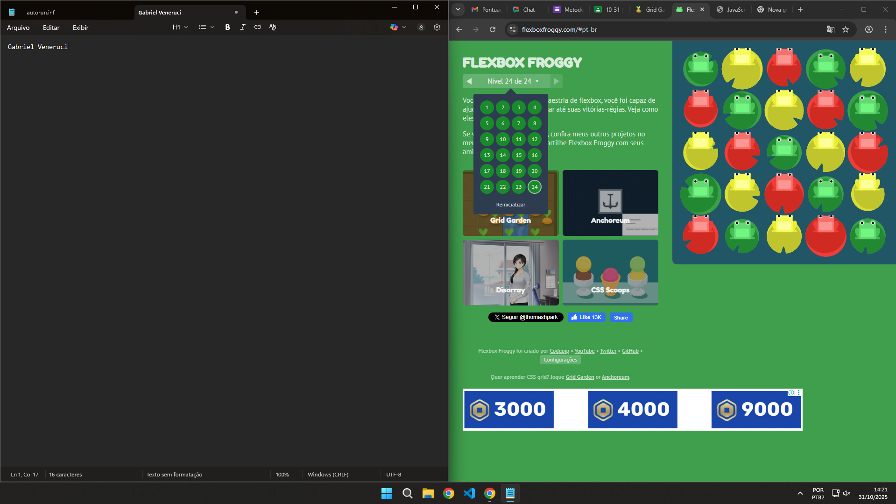

🕷️ Personagens Assustadores (Flexbox)

Grid

Fantasma do perigo

Flexbox
Entre se tiver coragem...
Grid
Fantasma do perigo
Flexbox
O Flexbox (Flexible Box Layout) é uma ferramenta do CSS que ajuda a alinhar e distribuir elementos dentro de um contêiner de forma flexível. Ele é ótimo para organizar itens em uma linha ou coluna, permitindo que o espaço entre eles se ajuste automaticamente. Aqui, ele foi usado para alinhar os personagens assustadores lado a lado, mantendo tudo centralizado — mesmo em diferentes tamanhos de tela! 💀
O CSS Grid Layout é uma ferramenta poderosa para criar layouts em duas dimensões — com linhas e colunas. Diferente do Flexbox, que organiza em uma única direção, o Grid permite montar grades completas, perfeitas para distribuir conteúdos de forma equilibrada. Aqui, ele organiza os itens místicos do nosso Halloween em uma grade assustadoramente simétrica! 🧙♀️